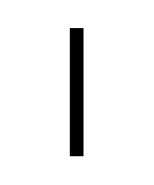
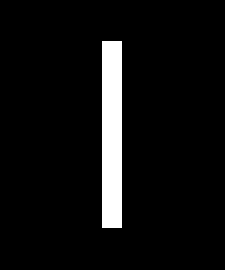

Auf dieser Website ist Platz für das, wofür mein Twitterprofil @charakterziffer nicht ausreicht. Mein Blog ist als Plus zu meinen Tweets gedacht, eben „@cz+“. // Die letzten drei Artikel:
Im Bereich Typografie gibt es viele optische Täuschungen, die bei der Gestaltung von Buchstaben ausgeglichen werden müssen. So sitzt der waagrechte Mittelstrich im Buchstaben H ein bisschen höher als die geometrische Mitte – sonst wirkt es für uns Menschen so, als läge er zu tief. Spitze und runde Buchstaben wie A oder O ragen ein wenig über die Buchstabenhöhe hinaus, damit sie in unseren Augen genauso groß erscheinen, wie Buchstaben mit einem geraden Abschluss (z.B. E, H oder X).
Eine Täuschung finde ich besonders absurd. Sie spielt bei der Anwendung von Schrift eine Rolle und ich kenne sie unter dem Begriff „Überstrahlung“. Hier eine Demonstration: Welche dieser zwei Linien erscheint dicker?

Mathematisch gemessen sind beide Linien genau 20 Bildschirm-Pixel breit und haben damit die gleiche Dicke. Trotzdem sieht die weiße Linie geringfügig dicker aus (und länger). Woran liegt das?
Die Bezeichnung „Überstrahlung“ verrät schon ein wenig, worum es geht: Helle Flächen überstrahlen dunklere und wirken dadurch größer. Die Täuschung tritt bei reflektierenden oder selbstleuchtenden Oberflächen auf, beispielsweise auf Straßenschildern oder Bildschirmen. Bei einer schwarzen Linie auf hellem Grund leuchtet der Hintergrund ein wenig in die schwarze Fläche hinein und scheint von dort etwas wegzunehmen – die Linie wirkt dünner. Umgekehrt leuchtet eine helle Linie über ihre Begrenzung hinaus noch etwas in einen dunklen Hintergrund hinein – und erscheint damit dicker.
Schriftarten, die speziell für reflektierende oder hinterleuchtete Beschilderung gestaltet wurden, bringen manchmal eine Variante mit, die den Überstrahlungs-Effekt ausgleicht. Zum Beispiel hat die Schrift Wayfinding Pro eine Negativ-Version, die geringfügig dünner ist als der reguläre Schnitt. Damit können helle und dunkle Schilder nebeneinander hängen, ohne dass die Schrift auf einem davon dicker aussieht. Wie man die Negativ-Version anwendet, erklärt eine FAQ-Seite des Schriftverlags FDI (engl.).
Auch auf Websites ist es möglich, die Wirkung der Überstrahlung abzumildern. In Webkit-Browsern (Chrome, Edge, Safari) funktioniert es, dem invers gesetzten Text (d. h. helle Schrift auf dunklem Grund) die CSS-Eigenschaft -webkit-font-smoothing: antialiased zu geben. Details dazu im Artikel Please Stop “Fixing” Font Smoothing (engl.). Genau wie der Autor Dmitry Fadeyev würde ich diese Methode aber nicht empfehlen, da sie nur für wenige Szenarien funktioniert und kein gültiger Webstandard ist.
Inzwischen verwenden rund 90 % der Internet-Nutzer:innen einen Browser, der variable Schriften unterstützt. Mit solchen Schriften kann man die Strichstärke leicht anpassen, z. B. bei inversem Text auf font-weight: 350 verringern (wenn die positiv gesetzte Schrift font-weight: 400 besitzt). Je nach Helligkeitswerten und Schrift muss man mit den Werten ein wenig herumprobieren, bis beide Farbvarianten gleich dick aussehen. Eine Anleitung mit praktischer Demo bietet der Artikel Dark Mode and Variable Fonts (engl.).
Diese Lösung finde ich vor allem dann wichtig, wenn dunkler Text auf hellem Grund und seine umgekehrte Variante nah beieinander stehen. Dann haben Leser:innen den direkten Vergleich und man sollte die Überstrahlung ausgleichen, damit der helle Text nicht zu fett aussieht.
Übrigens: Durch das Überstrahlen scheinen helle Buchstaben auf dunklem Grund auch ein wenig zusammenzulaufen und aneinander zu kleben. Dagegen hilft, die Buchstaben ganz leicht (!) zu sperren, im CSS z. B. mit letter-spacing: .01em;. Bei allen optischen Phänomenen zählt das Augenmaß weit mehr als mathematische Genauigkeit, getreu dem Zitat des Malers Josef Albers: „Nur der Schein trügt nicht.“
Update 6./11. Aug. 2020: Eben habe ich noch die Schrift „Darkmode“ entdeckt. Sie erschien im Mai 2020 und besitzt als variable font eine Einstellung extra für invers gesetzte Texte. Als englischen Fachbegriff für die Überstrahlung nutzt man halo effect, danke an Bruno Maag!
Mit Facebook, Twitter & Co hat sich eine neue Form der Rückmeldung etabliert, nämlich das Liken. Wenn mir ein Beitrag gefällt, klicke ich auf ein kleines Herzchen oder vergebe ein Daumen-hoch. Auf sehr einfache Weise kann ich meine Zustimmung, Wertschätzung oder Bewunderung ausdrücken.
Likes sind mehrdeutig
Äh … Moment. Heißt ein Like jetzt, dass jemand den Beitrag inhaltlich gut findet? Oder dass derjenige zwar anderer Meinung ist, ihm aber die gelungene Beschreibung gefällt? Oder dass die Person einfach ihre Solidarität signalisieren will? Oder was? Ein Like ist ziemlich unbestimmt. Beispiel:
🦄 Unfassbar: Hier werden unschuldige Einhörner abgeschlachtet! #Fabeltiermörder
Ist jemand, der diesen Tweet liked, genauso empört wie die Verfasserin? Oder eher ein zufriedener Einhornhasser, dem die Ausrottung nicht schnell genug gehen kann?
Likes bringen niemanden weiter
Ein einfaches Like sagt nichts außer einem sehr wagen „Ich mag daran etwas“. Entsprechend empfinde ich den Klick aufs Herzchen als nahezu bedeutungslos. Ich schreibe schließlich nicht, damit es irgendwem gefällt, sondern weil ich eine Diskussion in Gang bringen möchte, Wissen verbreiten oder zum Nachdenken anregen will. Gerne kassiere ich sogar Widerspruch und gut begründete, andere Meinungen.
Ein Like ist höchstens ein wohlmeinendes Aha. Mir signalisiert es, dass dir zwar gefällt, was ich geschrieben habe, du dir aber nicht die Mühe machst, dich weiter damit auseinanderzusetzen. Und das ist genau das Gegenteil von dem, was ich erreichen möchte. Möglicherweise verhindert die Möglichkeit zum Liken sogar konstruktive Kommentare. Nach dem Motto: Einmal liken und abgehakt.
Dabei hätten Antworten nicht nur für mich, sondern für alle Leser:innen einen Mehrwert. Da Kommentare öffentlich unter meinem Text erscheinen, können sie neue Aspekte aufgreifen, mich korrigieren und ergänzen. Sie zeichnen womöglich ein vielschichtigeres Bild, als mein Ursprungstext es könnte. Und davon hat jeder mehr, als von einem inhaltsleeren Herzchenklick.
Likes erzeugen Druck
So inhaltsleer ist das Like aber nicht für alle. Influencer:innen auf Instagram, die mit ihren Postings auf der Fotoplattform Geld verdienen, zeigen einen Unternehmen durch die Menge an Likes, wie viel Verbreitung sie bieten können. Likes können in diesem Fall richtig Geld bedeuten.
Andere Nutzer:innen machen an der Anzahl Likes fest, wie wertvoll ihr Beitrag angeblich ist oder sogar, wie beliebt sie sich selbst fühlen. Gerade bei Jugendlichen scheinen Likes so viel Druck zu erzeugen, dass seit letztem Jahr Instagram testet, die Anzahl der Likes zu verbergen.
Ist es nicht tragisch, wenn (ausbleibende) Likes das Selbstwertgefühl mancher Nutzer:innen schwächen? Dabei hängen Popularität und Qualität doch nur indirekt zusammen – es kommen viele weitere Faktoren ins Spiel, ob ein Post viele Likes bekommt oder nicht (z. B. Sichtbarkeit durch Algorithmen oder Weiterverbreitung, Tageszeit, Konkurrenzthemen).
Likes fördern Oberflächlichkeit – und Hass
Zugegeben, die These in der vorigen Überschrift ist etwas steil. Aber wofür werden denn Likes vergeben? Ich behaupte, zum einen für oberflächlichen Flausch-Inhalte wie Katzenbilder, lustige Faultiere, niedliche Entenküken oder tapsige Pandabären. Und ehrlich gesagt finde ich das für solche Inhalte völlig in Ordnung, ein belangloses Like zu vergeben. Das stiftet ein wohliges Gemeinschaftsgefühl und tut keinem weh … Außer wenn es bewirkt, dass Autor:innen dann lieber Kuschel-Content veröffentlichen, weil sie für tiefgängige Essays oder kritische Reportagefotos weniger Herzchen erhalten.
Was ich ganz sicher nicht möchte ist, dass Autor:innen ihre Beiträge bis an den Rand der Verfälschung zuspitzen (oder darüber hinaus), weil auch provokante Inhalte mehr Likes generieren. Aus der Gemeinschaft der Likenden wird hier dann vielleicht eine vereinte Hassgruppe, deren Mitglieder sich gegenseitig hochschaukeln. Dann doch besser (streng moderierte) Kommentare, um auch ausgleichenden Stimmen Gewicht zu verleihen.
Likes steigern Verbreitung, aber nur zweitklassig
Auf vielen Plattformen begünstigen Likes die Sichtbarkeit eines Beitrags. Zum Beispiel mischt Twitter in die algorithmisch sortierte Timeline immer mal wieder ein „XY gefällt das“, gefolgt von einem Tweet, der ein Like bekommen hat. So erreichen „beherzte“ Tweets auch Nutzer:innen, die dem Verfasser oder der Verfasserin selbst gar nicht folgen.
Nur: Je nach Plattform gibt es deutlich bessere Möglichkeiten, einem Beitrag mehr Aufmerksamkeit zu verschaffen. Ein Retweet auf Twitter zum Beispiel sorgt garantiert für mehr Sichtbarkeit und ist für Tweet-Schreiber:innen weitaus nützlicher.
Likes als Beruhigungspille
Vielleicht ist ein Like auch weniger für Autor:innen gedacht, sondern für die Leser:innen. Wie oben schon erwähnt, kann man sich wie in einer großen Gemeinschaft fühlen, wenn man zu den schon angezeigten 3.628 Herzchen noch sein eigenes Like dazuklickt.
In einem Konzert zu sitzen, bei dem zwischen einzelnen Stücken/Sätzen nicht geklatscht werden soll, ist ein komisches Gefühl. Vielleicht ist es vergleichbar, wie nach einen schönen Text weiterzusurfen, ohne zumindest eine scheinbare Anerkennung zu hinterlassen. So wie ein gemeinsamer Applaus eine gelungene Darbietung abschließt, könnte man einen schönen Text per Herzklick goutieren.
Wofür also Likes?
Ich fasse mal zusammen, wofür ich Likes geeignet halte:
Flausch-Inhalte, bei denen niemand eine vertiefende Auseinandersetzung erwartet.
Als zustimmende Lesebestätigung (entspricht „okay, passt“)
und … äh ne, das war’s schon.
Und daraus folgend die Bitte: Please don’t like me, bitte like mich nicht. Falls du es aber zur eigenen Beruhigung brauchst, darfst du gerne auf das Herzchen hier klicken. Technisch hat es jedoch keine Funktion – niemand erfährt, was du damit gemacht hast. Ich freue mich viel mehr über einen ermunternden, kritischen oder nachdenklichen Kommentar.
Es gibt Dinge, die regen meine Kreativität an und ich komme gleich auf gute Ideen. Eines dieser Dinge ist das folgende Miniheft. Es lässt sich sehr leicht aus einem einzelnen Papierbogen herstellen. Die Anleitung gibt’s diesmal als kurzes Video:
Das einfache Heftchen lädt dazu ein, bekritzelt und beschrieben zu werden. Wie wäre es zum Beispiel mit einem Tagebüchlein? Oder gemalten Glückwünschen für eine liebe Person? Die acht kleinen Seiten bieten viele Möglichkeiten:
Einfache Rezepte
Gedanken zu einem Thema
eine gezeichnete Anleitung
bewegende Gedichte
Collagen aus Foto-Schnippseln
die kommende Gartenplanung
eine ganze Comic-Serie
Liedtexte zum Mitsingen
eine Sammlung von tollen Farben
schöne Erinnerungen
Sehr praktisch: Wenn man sein Heftchen fertig gestaltet hat, kann man es wieder auffalten und das einzelne Blatt mit einem Kopierer vervielfältigen. So entstehen schnell mehrere Exemplare, die sich gut als Geschenk eignen.
Für diesen Blog-Artikel habe ich selbst zwei Minihefte geschrieben. Das erste gibt fünf Tipps für bessere Typografie, das zweite enthält gezeichnete Liebeserklärungen. Zum Nachbasteln unten die PDF-Datei herunterladen und die entsprechende Seite ausdrucken. Beim Falten bitte darauf achten, dass die Titelseite immer außen bleibt.
Übrigens: Auf Englisch heißen gebastelte Heftchen auch zines [gesprochen: „siens“], eine Kurzform von magazines – sozusagen kleine, selbstgemachte Zeitschriften.
Das Wort kombiniert Persönlichkeit (Charakter) mit Sachlichem (Ziffer). Zusammengesetzt ergibt sich ein Synonym für Mediävalziffer, eine Zahlenvariante mit Ober- und Unterlängen.
Schriftarten dieses Blogs
Wenn dein Browser eingebettete Schriften (WOFF2) unterstützt, dann liest du die Fließtexte hier in der Source Sans Pro von Paul D. Hunt, erschienen 2012 bei Adobe.
Die Überschriften sind aus der czSlab gesetzt, die ich für dieses Blog gestaltet habe. Sie orientiert sich an Yanones viel ausgefeilterer Antithesis von 2014.
§ 1 Externe Links · Dieses Blog verlinkt auf Websites Dritter. Zum Zeitpunkt der erstmaligen Verlinkung waren dort keine Rechtsverstöße ersichtlich. Da ich keinen Einfluss auf fremde Websites habe, kann ich für deren Inhalte und Gestaltung keine Haftung übernehmen. Sollte ich von Rechtsverstößen erfahren, entferne ich die Verlinkung unverzüglich. Eine ständige Kontrolle der externen Links ist ohne konkrete Hinweise aber nicht zumutbar.
§ 2 Datenschutzerklärung · Mir ist der Schutz deiner Daten sehr wichtig. Deshalb verzichte ich auf Cookies, vermeide möglichst Dienste von Drittanbietern und erhebe so wenige Daten wie es geht. Diese Website kann ohne die Angabe persönlicher Daten genutzt werden.
Die einzige Ausnahme sind Kommentare. Wenn du einen meiner Texte kommentierst, bekomme ich die eingegebenen Daten und eine Zeitangabe per (prinzipiell unsicherer) E-Mail zugestellt. Falls dein Kommentar sachlich zur Diskussion beiträgt, ergänze ich ihn öffentlich sichtbar unter dem entsprechenden Artikel. Dabei sind sämtliche Angaben freiwillig (Name, Website, Mailadresse, Kommentar) – auch anonyme Kommentare sind möglich.
§ 3 Widerspruch gegen Direktwerbung · Die Verwendung meiner Kontaktdaten zur gewerblichen Werbung ist ausdrücklich nicht erwünscht; ich widerspreche hiermit jeder kommerziellen Nutzung und Weitergabe meiner Daten (gemäß § 21 DSGVO). // Über private Fanpost freue ich mich allerdings sehr und antworte darauf mit großem Vergnügen!
 @charak
@charak